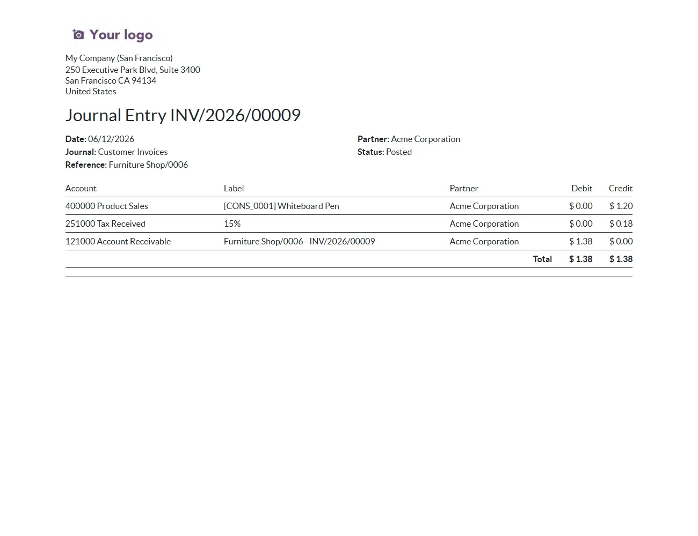

Print Journal Entries - Journal Entry Report PDF
Print journal entries as a PDF report: select one or more entries and print a clean journal voucher with debit and credit lines and balanced totals.
- Price
- Free
- Odoo versions
- 16.0
- 17.0
- 18.0
- 19.0
- 20.0
- Technical name
tamadoo_print_journal_entries- License
- LGPL-3

Text and screenshots below are from the Odoo 20.0 version of this module.
One-click PDF of any journal entry, with debit / credit totals.
What it does
Select one or more journal entries and use Print → Journal Entries to get a tidy PDF. Each entry shows its header and a full debit / credit line table with balanced totals.
- Header: date, journal, reference, partner, status.
- Lines: account, label, partner, debit, credit.
- Single entry or batch, from any list or form.
How it looks

Step by step
1. Select the entries
Open Accounting → Accounting → Journal Entries and tick one or more entries. It also works on invoices and bills.
2. Print
Click Print → Journal Entries. On a single entry, open the gear menu next to the record name and choose Journal Entries (it sits under Print when there are several reports).
3. Read the PDF
Each entry is printed with its date, journal, reference, partner and status, followed by the lines with account, label, partner, debit and credit and the totals.

Requirements
- Odoo 16 / 17 / 18 / 19 / 20 — Community or Enterprise.
- Depends on
account.
Tamadoo · tama.odoo@gmail.com
Get Print Journal Entries
Questions before buying? Write to tama.odoo@gmail.com.